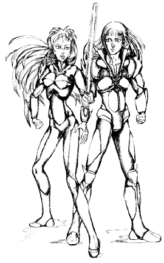

 When the Regis decided to send an occupation force back to Earth, she was faced with a serious problem; it was simply impossible for her to be in two places at once. Her "enlightened evolution" experiments demanded her full attention, but the food supply problems on New Optera were critical enough that she had to ensure that the temporary re-occupation of Earth was successful. Plus her forces on Earth would need some way to rebuild all the Hives and fortifications that were destroyed during the Third Robotech War.
Finally, she reached a decision. She called together the best of the Stage 5 Invid that had survived the previous war with the humans. These Invid were the strongest, smartest, and most loyal followers of the Regis, who had proven themselves time and time again on the battlefields of Earth. These humanoid Invid would be the leaders of the Earth re- occupation forces, and to this end the Regis evolved them into a higher form of life, granting each of them a small amount of her powers. These elite Invid became the ultimate stage in Invid evolution; the Stage Six Invid.
The stage six Invid is completely humanoid in appearance, like the stage 5 Invid, but are usually taller and slightly more agile. The biggest difference is their eyes, which are slitted and catlike. They are always very attractive and have the same light Caucasian skin/complexion and long hair as their less-developed brethren.
But the greatest difference in these new Invid is the presence of psychic powers, similar to those of the Regis herself. In essence, the stage six Invid can be considered mini-Regents and mini-Regis of the Invid race. Individually, their powers are not incredibly impressive, but together they can perform acts equal to those of the Regis, including transmutation of Invid and mecha, and the alchemical ability to create Invid hives and power cores. These new Invid were also the most intelligent and the most devious since the Regent. They were the ones who came up with the idea of the Invid space hives and the new Invid mecha designs. And they are constantly at work thinking up new plans to prevent the humans from interfering in their work.
Unfortunately, the evolution of the Stage Six Invid has had some unexpected effects on their mental stability. Most of the new Invid consider themselves far superior to lower stage Invid, especially the Stage Five Invid. This has led to a great deal of friction between the two Invid "races", to the point where some stage 5 Invid might consider betraying their superiors if they thought they could get away with it. This superiority complex borders on psychosis when it comes to humans. At best, stage 6 Invid consider humans a lesser race, who do not deserve the rights of freedom or self-rule. At worst, some stage 6 Invid see humans as vermin, suitable only for hard labor, laboratory tests, and extermination.
Stage 6 Invid are ALWAYS snobbish and overbearing. They care little for the concerns of others, and are often inconsiderate and outright rude to anyone who is not a fellow stage 6 Invid. They are loyal only to themselves, other stage 6 Invid, and the Regis. Temperament among leader Invid tends to vary; some are quite emotional, easily giving into bloodlust and berserker tendencies during battle, while others are analytical and emotionless, carrying out their plans and attacks with cold, calculated efficiency. However, no stage 6 Invid will ever allow his/her emotions to interfere with the occupation force mission.
NOTE: There are maybe only two dozen stage 6 Invid on Earth, including
those stationed in the orbital hives. Gamemasters should not
indiscriminately throw them at PCs, but instead save these characters
for recurring villains and enemy masterminds. Combat with stage 6 Invid
should only come after a long series of other adventures and battles,
perhaps even saved for the final climactic battle of a multi-part
adventure.
Pilot: Warlord Battloid
Hit Points: 24 + 1D6
S.D.C.:6D6
Alignments:Anarchist, Miscreant, Aberrant, or Diabolic
NOTE: Any attribute of 16 or more (except ISP) gets to roll another 1D6 and add it to that specific attribute score.
Attacks per Melee: Four hand-to-hand, Six with Mecha Combat Training.
Damage from punch or kick is 1D6.
Bonuses: +1 to strike, +3 to parry or dodge, +3 on initiative.
Basic Mechanics (general): 60%
Detect Ambush: 65%
Detect Concealment: 55%
Intelligence: 55%
Interrogation: 65%
Invid Mecha Mechanics: 90%
Knowledge of Protoculture/Flower of Life: 70%
Navigation (air, land, water): 80%
Navigation (space): 75%
Pilot Invid Battloids (all): 90%
Protoculture Alchemy/Transmutation: 70%
Tracking: 60%
W.P. Energy Pistol (+2 to strike)
W.P. Energy Rifle (+1 to strike)
W.P. Sword (+2 to strike)
All skills are equivalent to Earth skills. In addition, choose 2D4 skills
from the Medical, Physical, Science, or Technical
categories.
By gathering together and combining their powers, the stage 6 Invid are able to perform the following feats. Each leader Invid can only participate in one such transmutation per day. All powers are identical to those described for the Regis on pages 75-76 of the Invid Invasion book.
Some stage 6 Invid have been able to augment their powers for short periods of time using other means, such as special Invid brain computers and genesis pits. These plot devices and their effects are left up to the imagination of the game master.


 |
http://www.mcs.net/~deitrich/index.html deitrich@mcs.net |
Last Updated: |